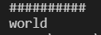
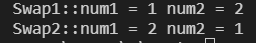
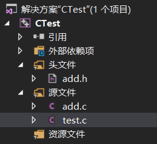
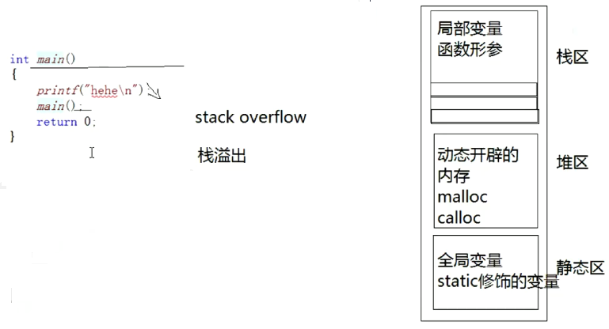
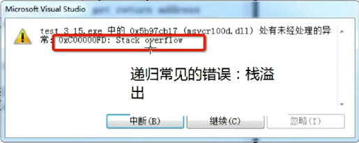
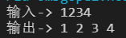
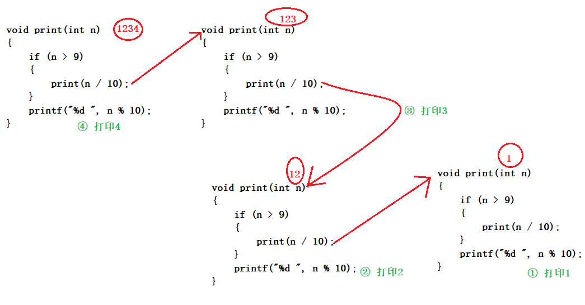
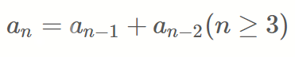
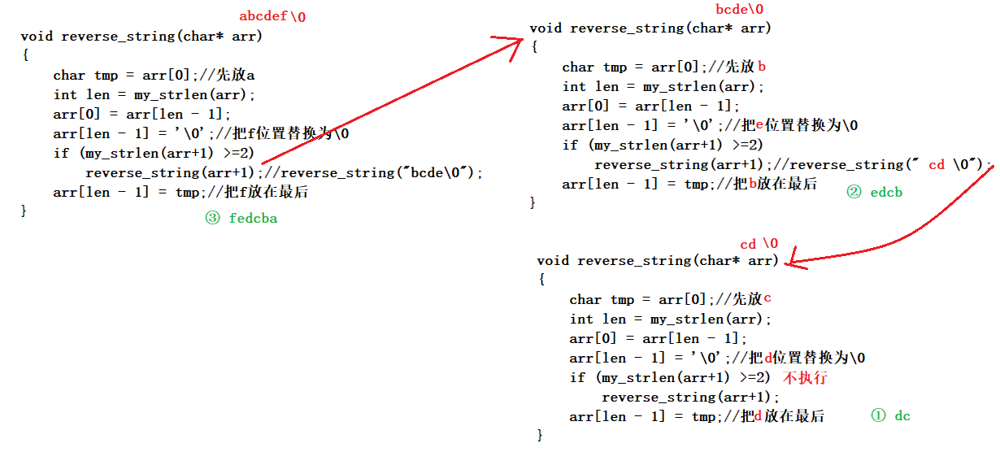

函数是什么
维基百科中对函数的定义：子程序
- 在计算机科学中，子程序（英语：Subroutine, procedure, function, routine, method,subprogram, callable unit），是一个大型程序中的某部分代码， 由一个或多个语句块组成。它负责完成某项特定任务，而且相较于其他代码，具备相对的独立性。
- 一般会有输入参数并有返回值，提供对过程的封装和细节的隐藏。这些代码通常被集成为软件库。
C语言中函数的分类
- 库函数
- 自定义函数
库函数
为什么会有库函数？
- 我们知道在我们学习C语言编程的时候，总是在一个代码编写完成之后迫不及待的想知道结果，想把这个结果打印到我们的屏幕上看看。这个时候我们会频繁的使用一个功能：将信息按照一定的格式打印到屏幕上（printf）。
- 在编程的过程中我们会频繁的做一些字符串的拷贝工作（strcpy）。
- 在编程是我们也计算，总是会计算n的k次方这样的运算（pow）。
注：
http://www.cplusplus.com/
http://en.cppreference.com
常见库函数
- IO函数
- 字符串操作函数
- 字符操作函数
- 内存操作函数
- 时间/日期函数
- 数学函数
- 其他库函数
strcpy-拷贝字符串
char * strcpy ( char * destination, const char * source );
#include <string.h>
#include <stdio.h>
int main()
{
//strcpy - string copy -字符串拷贝
//strlen - string length -字符串长度有关
char arr1[] = "world";
char arr2[] = "##########";
printf("%s\n", arr2);
strcpy(arr2, arr1);
printf("%s\n", arr2);
return 0;
}

void * memset ( void * ptr, int value, size_t num );
#include <string.h>
#include <stdio.h>
int main()
{
char arr[] = "hello world";
memset(arr, '*', 5);
printf("%s\n", arr);
return 0;
}
自定义函数
函数的组成
ret_type fun_name(para1, * )
{
statement;//语句项
}
ret_type 返回类型
fun_name 函数名
para1 函数参数
例子：写一个函数可以找出两个整数中的最大值
#include <stdio.h>
//get_max函数的设计
int get_max(int x, int y)
{
return (x > y) ? (x) : (y);
}
int main()
{
int num1 = 10;
int num2 = 20;
int max = get_max(num1, num2);
printf("max = %d\n", max);
return 0;
}
例子：写一个函数可以交换两个整形变量的内容
#include <stdio.h>
void Swap1(int x, int y)
{
int tmp = 0;
tmp = x;
x = y;
y = tmp;
}
void Swap2(int *px, int *py)
{
int tmp = 0;
tmp = *px; //*px - 解引用操作
*px = *py;
*py = tmp;
}
int main()
{
int num1 = 1;
int num2 = 2;
Swap1(num1, num2); // 传值调用
printf("Swap1::num1 = %d num2 = %d\n", num1, num2); //没有交换
Swap2(&num1, &num2); // 传址调用
printf("Swap2::num1 = %d num2 = %d\n", num1, num2); //交换了
return 0;
}

函数参数
实际参数（实参）
真实传给函数的参数，叫实参。实参可以是：常量、变量、表达式、函数等。无论实参是何种类型的量，在进行函数调用时，它们都必须有确定的值，以便把这些值传送给形参.
形式参数（形参）
形式参数是指函数名后括号中的变量，因为形式参数只有在函数被调用的过程中才实例化（分配内存单元），所以叫形式参数。形式参数当函数调用完成之后就自动销毁了。因此形式参数只在函数中有效.
上面Swap1和Swap2函数中的参数 x，y，px，py 都是形式参数。在main函数中传给Swap1的num1，num2和传给Swap2函数的&num1，&num2是实际参数。
函数调用
传值调用
函数的形参和实参分别占有不同内存块，对形参的修改不会影响实参。
传址调用
1.传址调用是把函数外部创建变量的内存地址传递给函数参数的一种调用函数的方式。
2.这种传参方式可以让函数和函数外边的变量建立起正真的联系，也就是函数内部可以直接操作函数外部的变量.
函数练习
- 写一个函数，每调用一次这个函数，就会将num的值增加1。
#include <stdio.h>
void add(int *px)
{
*px = *px + 1; // *p++ err
}
int main()
{
int num = 0;
add(&num);
printf("%d\n", num);
return 0;
}
函数的嵌套调用和链式访问
函数和函数之间可以有机的组合的
嵌套调用
#include <stdio.h>
void new_line()
{
printf("hehe\n");
}
void three_line()
{
int i = 0;
for (i = 0; i < 3; i++)
{
new_line();
}
}
int main()
{
three_line();//打印三行hehe
return 0;
}
链式访问
把一个函数的返回值作为另外一个函数的参数.
#include <stdio.h>
#include <string.h>
int main()
{
char arr[20] = "hello";
int ret = strlen(strcat(arr, "world")); //strlen函数-字符长度,strcat函数-源字符串的副本追加到目标字符串
printf("%d\n", ret); // 10
return 0;
}
#include <stdio.h>
int main()
{
printf("%d", printf("%d", printf("%d", 43)));//printf 返回 打印字符的个数
//结果是啥？4321
return 0;
}
函数的声明和定义
函数声明
- 告诉编译器有一个函数叫什么，参数是什么，返回类型是什么。但是具体是不是存在，无关紧要。
- 函数的声明一般出现在函数的使用之前。要满足先声明后使用。
- 函数的声明一般要放在头文件中的。
函数定义
函数的定义是指函数的具体实现，交待函数的功能实现。

add.h的内容 放置函数的声明
#ifndef __ADD_H__
#define __ADD_H__
//函数Add的声明
int Add(int x, int y);
#endif //__ADD_H__
add.c的内容 放置函数的定义
//函数Add的定义
int Add(int x, int y) {
int z = x + y;
return z;
}
test.c的内容 放置函数的实现
#include "add.h"
//函数Add的实现
int main()
{
printf("%d\n", Add(1, 2)); //3
return 0;
}
函数递归
什么是递归
程序调用自身的编程技巧称为递归（ recursion）。 递归做为一种算法在程序设计语言中广泛应用。 一个过程或函数在其定义或说明中有直接或间接调用自身的一种方法，它通常把一个大型复杂的问题层层转化为一个与原问题相似的规模较小的问题来求解，递归策略只需少量的程序就可描述出解题过程所需要的多次重复计算，大大地减少了程序的代码量。 递归的主要思考方式在于：把大事化小
递归的两个必要条件
- 存在限制条件，当满足这个限制条件的时候，递归便不再继续。
- 每次递归调用之后越来越接近这个限制条件
注：递归要找到条件，否则会溢出 栈溢出：  
递归练习
- 接受一个整型值（无符号），按照顺序打印它的每一位。 例如： 输入：1234，输出 1 2 3 4
#include <stdio.h>
void print(int n)
{
if (n > 9)
{
print(n / 10);
}
printf("%d ", n % 10);
}
int main()
{
int num = 0;
printf("输入-> ");
scanf("%d", &num);
printf("输出-> ");
print(num);
return 0;
}


- 编写函数不允许创建临时变量，求字符串的长度。
#include <stdio.h>
#include <string.h>
int my_strlen(const char *str)
{
//法一：记数方式
// int count = 0;
// while (*str != "\0")
// {
// count++;
// str++;
// }
// return count;
//法二：递归方式
if (*str == '\0') //*str就是字符
return 0;
else
return 1 + my_strlen(str + 1); //str +1 是str的下一个地址
//法三：指针方式
// char* start = str;
// char* end = str;
// while (*end != '\0')
// {
// end++;
// }
// return end - start;//
}
int main()
{
char arr[] = "hello";
// int len = strlen(arr); // 求字符串长度
// char *p = "abcedke";
// int len = my_strlen(p);//7
int len = my_strlen(arr); //arr是数组，数组传参，传过去的不是整个数组，而是第一个元素的地址
printf("%d\n", len); //5
return 0;
}
递归与迭代
- 求n的阶乘。（不考虑溢出）
#include <stdio.h>
int factorial(int n)
{
if (n <= 1)
return 1;
else
return n * factorial(n - 1);
}
int main()
{
int num = 0;
int ret = 0;
scanf("%d", &num);
ret = factorial(num);
printf("%d\n", ret);
return 0;
}
- 求第n个斐波那契数。（不考虑溢出）

#include <stdio.h>
//斐波那契数列：1 1 2 3 5 8 13 21 34 55 …
// int count = 0; //全局变量
int fib(int n)
{
// if (n == 3)//最后我们输出看看count，是一个很大很大的值。
// count++;
if (n <= 2)
return 1;
else
return fib(n - 1) + fib(n - 2);
}
int main()
{
int num = 0;
scanf("%d", &num);
printf("%d", fib(num));
return 0;
}
问题
- 在使用 fib 这个函数的时候如果我们要计算第50个斐波那契数字的时候特别耗费时间。
- 使用 factorial 函数求10000的阶乘（不考虑结果的正确性），程序会崩溃。
为什么
我们发现 fib 函数在调用的过程中很多计算其实在一直重复。 如果我们把代码修改一下
那我们如何改进呢？ 在调试 factorial 函数的时候，如果你的参数比较大，那就会报错： `stack overflow（栈溢出） 这样的信息。 系统分配给程序的栈空间是有限的，但是如果出现了死循环，或者（死递归），这样有可能导致一直开辟栈空间，最终产生栈空间耗尽的情况，这样的现象我们称为栈溢出。
那如何解决上述的问题
- 将递归改写成非递归。
- 使用static对象替代nonstatic局部对象。在递归函数设计中，可以使用static对象替代nonstatic局部对象（即栈对象），这不仅可以减少每次递归调用和返回时产生和释放nonstatic对象的开销，而且static对象还可以保存递归调用的中间状态，并且可为各个调用层所访问.
- 改进factorial
int factorial(int n)
{
int res = 1;
while (n > 1)
{
res *= n;
n -= 1;
}
return res;
}
- 改进fib
//斐波那契数列：1 1 2 3 5 8 13 21 34 55 …
int fib(int n)
{
int res = 1;
int pre_res = 1;
int next_older_res = 0;
while (n > 2)
{
next_older_res = pre_res;
pre_res = res;
res = pre_res + next_older_res;
n--;
}
return res;
}
提示
- 许多问题是以递归的形式进行解释的，这只是因为它比非递归的形式更为清晰。
- 但是这些问题的迭代实现往往比递归实现效率更高，虽然代码的可读性稍微差些。
- 当一个问题相当复杂，难以用迭代实现时，此时递归实现的简洁性便可以补偿它所带来的运行时开销。
练习
字符串逆序（递归实现）
编写一个函数reverse_string(char* string)(递归实现)
实现：将参数字符串中的字符反向排列。
要求：不能使用C库函数中的字符串操作函数。
- 主函数
#include <stdio.h>
#include <string.h>
int my_strlen(char* str)
{
int count = 0;
while (*str != '\0')
{
count++;
str++;
}
return count;
}
//……
int main()
{
char arr[] = "abcdefg";//fedcba
reverse_string(arr);
printf("%s\n", arr);
return 0;
}
非递归方式
void reverse_string(char arr[]) { int left = 0; int right = my_strlen(arr)-1; while (left<right) { int tmp = arr[left]; arr[left] = arr[right]; arr[right] = tmp; left++; right--; } }递归方式
//abcdef // a和f的小环 // 逆序reverse_string("bcde") void reverse_string(char* arr) { char tmp = arr[0];//先放a int len = my_strlen(arr); arr[0] = arr[len - 1]; arr[len - 1] = '\0';//把f位置替换为\0 if (my_strlen(arr+1) >=2) reverse_string(arr+1);//reverse_string("bcde\0"); arr[len - 1] = tmp;//把f放在最后 }
计算一个数的每位之和（递归实现）
写一个递归函数DigitSum(n),输入一个非负整数，返回组成它的数字之后而
例如：调用 DigitSum(1729),则应该返回是1+7+2+9，它的和是19
#include <stdio.h>
//DigitSum(1729)
//DigitSum(172) + 1729%10
//DigitSum(17) + 172%10 + 1729%10
//DigitSum(1) + 17%10 + ...
//1+7+2+9
int DigitSum(unsigned int num)
{
if (num > 9)
{
return DigitSum(num / 10) + num % 10;
}
else
{
return num;
}
}
int main()
{
unsigned int num = 0;
scanf("%d", &num);//1729
int ret = DigitSum(num);
printf("ret = %d\n", ret);
return 0;
}
递归实现n的k次方
#include <stdio.h>
double Pow(int n, int k)
{
//n^k = n* n^(k-1)
if (k < 0)
return (1.0 / (Pow(n, -k)));
else if (k == 0)
return 1;
else
return n*Pow(n, k - 1);
}
int main()
{
int n = 0;
int k = 0;
scanf("%d%d", &n, &k);
double ret = Pow(n, k);
printf("ret = %lf\n", ret);
return 0;
}